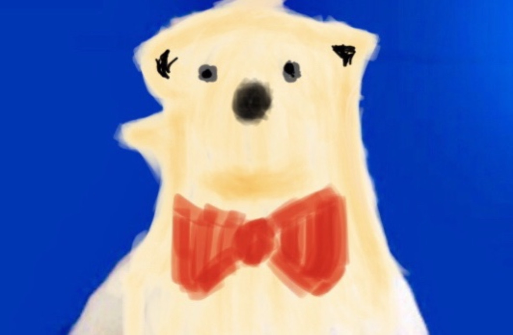

FRESH PICKS
新着ゲーム.
SHIROKUMA'S CHOICE
おすすめゲーム.
FIND YOUR NEXT FAVORITE
すべてのゲーム.
WHAT'S NEW
お知らせ.
ご案内
2026.11.04 — スマホ縦持ちの農場アクション「むぎの丘だより」ベータ版を公開しました。
HELLO FROM SHIROKUMA
遊び心を、少しずつ。
しろくまのオリジナルゲームを集める、小さなホームページです。
小さな冒険を、少しずつ育てています。

しろくまのSHIROKUMA ORIGINAL GAMES
新作ゲーム、ベータ版公開中
ちょっとひと息。まだ知らない遊びに出会う場所。
しろくまのオリジナルゲームを、ここから。
新作「むぎの丘だより」で、麦畑の一年を体験できます。
FRESH PICKS
SHIROKUMA'S CHOICE
FIND YOUR NEXT FAVORITE
WHAT'S NEW
2026.11.04 — スマホ縦持ちの農場アクション「むぎの丘だより」ベータ版を公開しました。
HELLO FROM SHIROKUMA
しろくまのオリジナルゲームを集める、小さなホームページです。
小さな冒険を、少しずつ育てています。